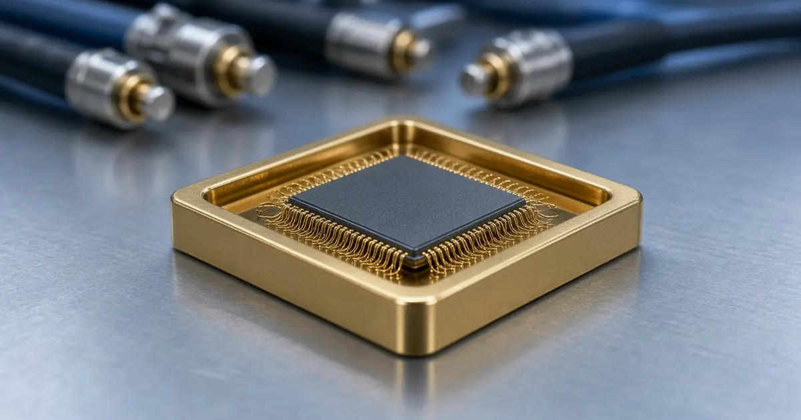
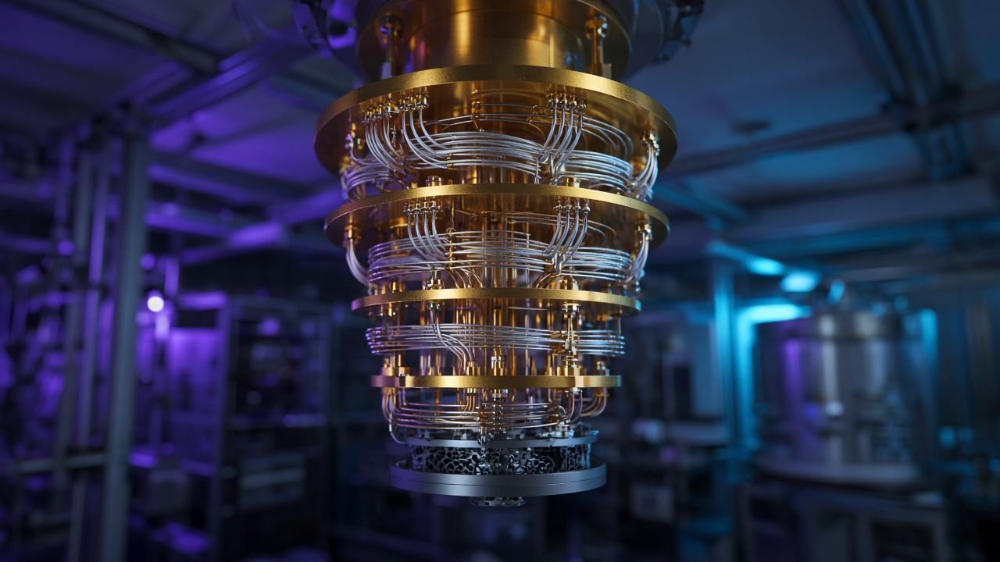
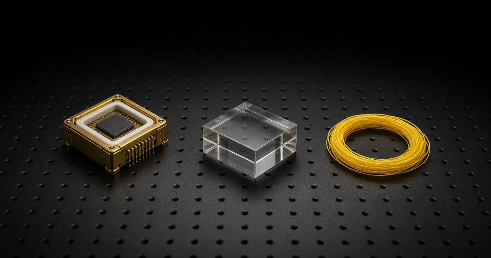
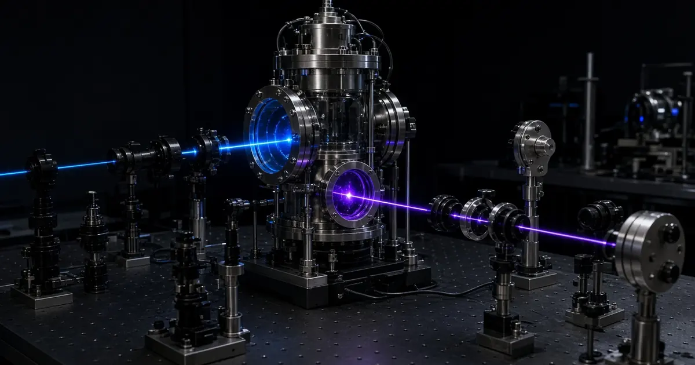
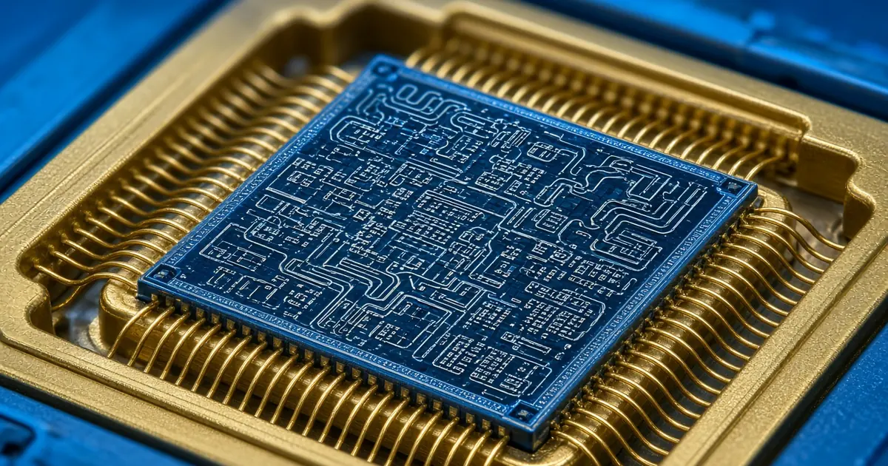
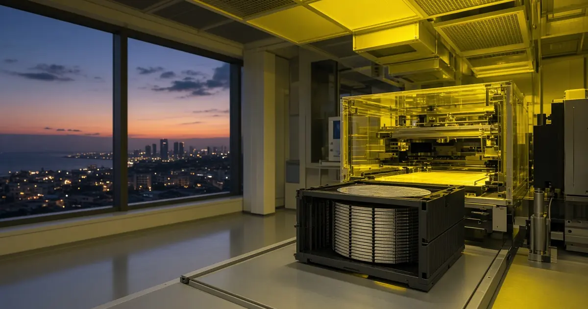

Hardware
IQM says Emerald entangled all 54 qubits, with a GHZ fidelity of 0.516
IQM says its Emerald cloud system prepared a 54-qubit GHZ state at fidelity 0.516 with readout-error mitigation, just above 0.5.

Independent, answer-first quantum computing and quantum technology news: hardware, algorithms, industry and funding, research and policy.
Read the latestRSS feedAI-generated image

IQM says its Emerald cloud system prepared a 54-qubit GHZ state at fidelity 0.516 with readout-error mitigation, just above 0.5.

According to NIST, FIPS 203, 204 and 205, effective 14 August 2024, cover key establishment (ML-KEM) and two signature methods (ML-DSA and SLH-DSA).
According to NIST IR 8547, published 27 October 2026, quantum-vulnerable public-key algorithms are deprecated after 2030 and disallowed after 2035.

Iceberg Quantum's Pinnacle 1.2 says simulations show RSA-2048 factoring could need about 48,000 physical qubits and roughly a day under its best assumptions.

Quantinuum says its Helios trapped-ion computer reached 99.9995% logical fidelity with a color code, about five errors per million operations.

Google Quantum AI says magic state cultivation worked on its Willow chip, cutting errors about 40-fold and yielding T-states at 99.99% logical fidelity.

Barcelona's Qilimanjaro Quantum Tech says it closed €19.6 million, with €10 million from Indra Group via IndraMind and €9.6 million from Spain's SETT.

The UK government announced £78 million for quantum: £50 million for sensing and navigation projects, £20 million for networking and £8 million for apprentices.